Recursos de Tecnología para el aula, libres para usar y compartir
Bienvenido a Picuino, una plataforma educativa abierta con recursos de Tecnología para Secundaria (ESO), Bachillerato y Formación Profesional. Aquí encontrarás materiales didácticos, ejercicios, proyectos de taller, simuladores y tutoriales de dibujo, electricidad, electrónica, programación y robótica. Recursos pensados para profesores y estudiantes, que facilitan el aprendizaje práctico y permiten enseñar, experimentar y aprender en el aula. Consulta, descarga y comparte los materiales según las condiciones de la licencia libre Creative Commons BY-SA 4.0.
-
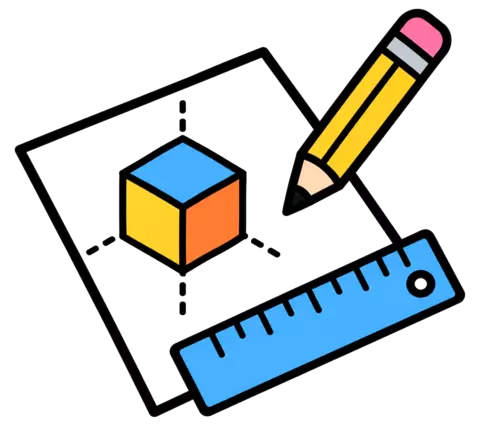
DIBUJO
-
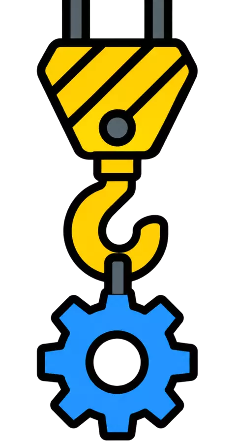
MECÁNICA
-
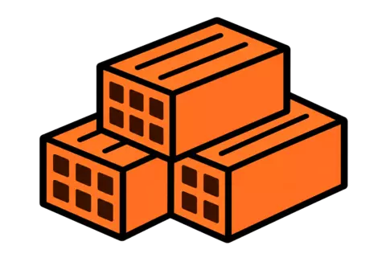
MATERIALES
-
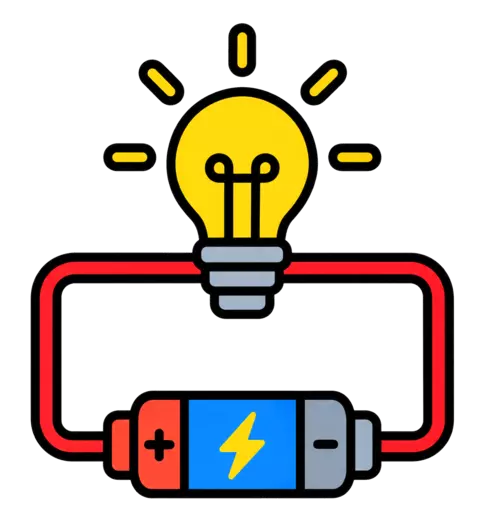
ELECTRICIDAD
-
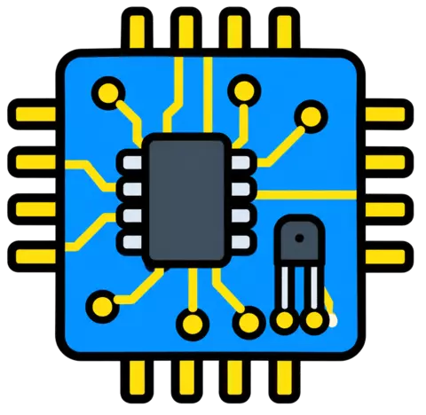
ELECTRÓNICA
-
INFORMÁTICA
-
PROGRAMACIÓN
-
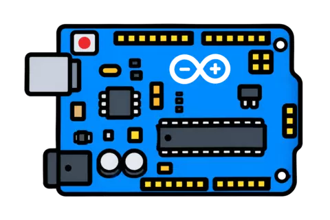
ARDUINO
-
ROBÓTICA
-
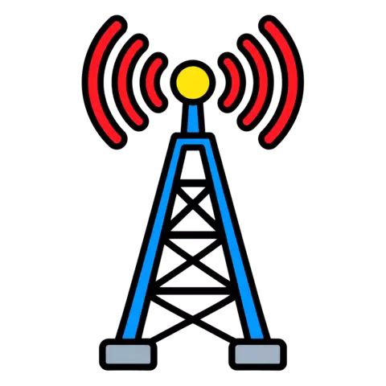
COMUNICACIONES
-
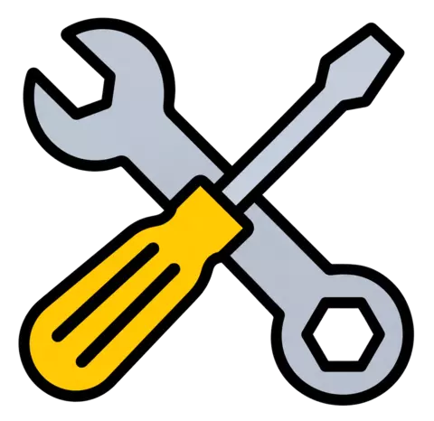
TALLER
-
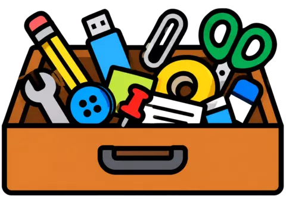
VARIOS
-
LEGISLACIÓN
-
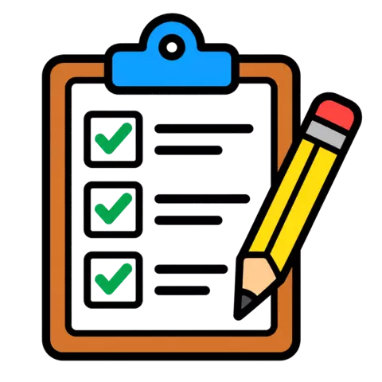
CUESTIONARIOS
-
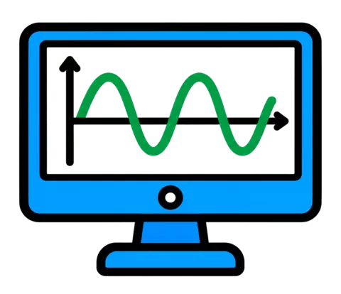
SIMULADORES